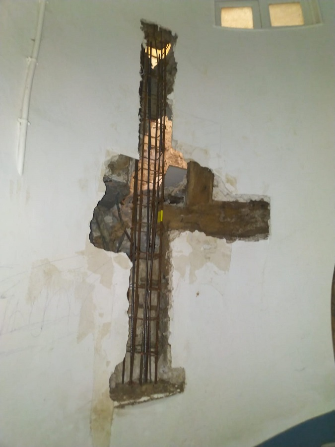
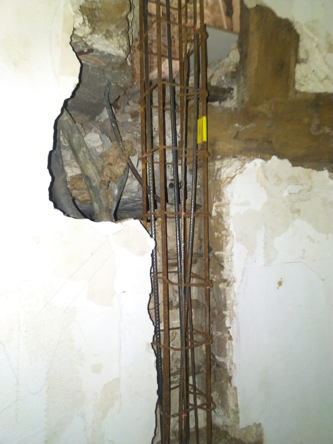
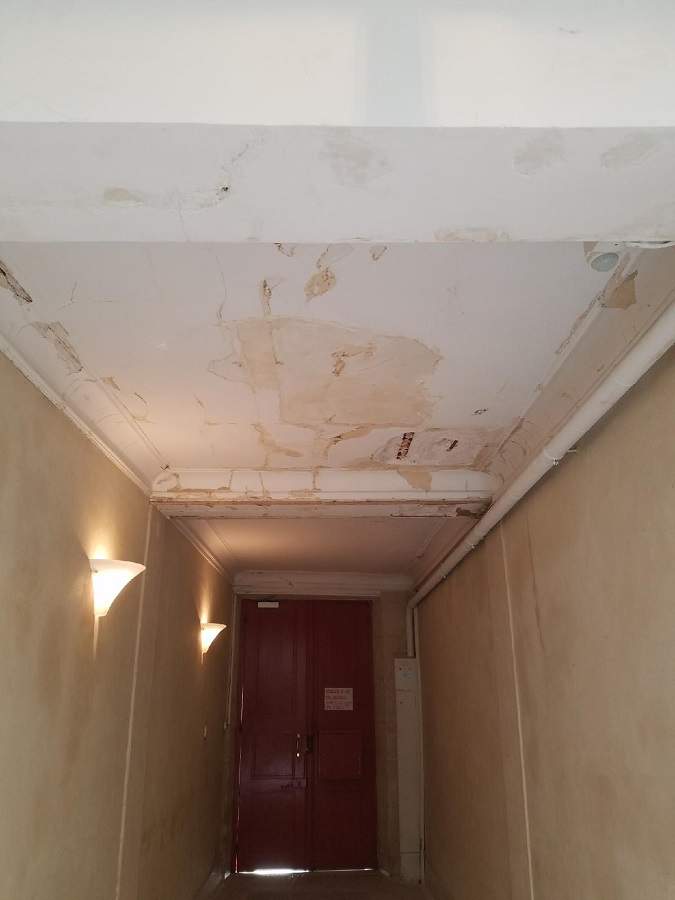

Un plafond qui s’écaille au-dessus des boîtes aux lettres, des murs marqués d’étage en étage : tout l’immeuble passe chaque jour par le hall et l’escalier. En copropriété, la rénovation de la cage d’escalier et du hall se prépare : un vote, des devis à comparer, et parfois un diagnostic avant de toucher aux peintures. Les étapes, puis un hall que nous avons rénové, en photos.
En bref
- Repeindre et réparer le hall et l’escalier, c’est de l’entretien des parties communes : d’après l’ANIL, il se vote à la majorité de l’article 24, et ce qui transforme ou améliore, à la majorité de l’article 25.
- À partir d’un montant voté par l’assemblée générale, la mise en concurrence de plusieurs entreprises est obligatoire.
- Dans un immeuble collectif d’habitation construit avant 1949, les travaux qui risquent d’abîmer fortement les peintures et autres revêtements des parties communes doivent être précédés d’un constat de risque d’exposition au plomb.
Ce que comprend la rénovation d’un hall ou d’une cage d’escalier
Un hall ou une cage d’escalier, ce sont des murs et des plafonds, mais aussi des boiseries, une rampe, des portes, des boîtes aux lettres et l’éclairage. Le chantier comprend par exemple :
- la protection des sols, des marches et des portes avant de commencer
- les murs et les plafonds : parties abîmées grattées, fissures rebouchées, enduit, puis peinture
- la porte de l’immeuble, reprise puis repeinte dans la teinte fournie par le syndic
- les ferronneries, grattées, traitées contre la rouille, puis repeintes
- les boîtes aux lettres, déposées puis reposées
- le nettoyage et l’évacuation des déchets, à la fin
Les goulottes électriques des paliers peuvent être reprises en même temps. Un exemple en photos dans notre article sur l’électricité des parties communes.
Certaines cages d’escalier demandent davantage qu’une peinture. Sur un de nos chantiers, le mur d’une cage d’escalier a été ouvert pour un renfort en béton armé. La photo montre les armatures en acier en place.


Cage d’escalier : armatures en acier en place pour un renfort en béton armé.
Hall et cage d’escalier : nos rénovations, avant et après
Électricité des parties communes en copropriété : une remise en état en photos
Le vote et les devis
Les travaux sur les parties communes se décident en assemblée générale. L’ANIL range dans la majorité de l’article 24 « les travaux d’entretien des parties communes et de maintien de l’immeuble en bon état », en citant la réparation des escaliers. C’est la majorité des voix exprimées des copropriétaires présents, représentés ou ayant voté par correspondance. Les travaux de transformation, d’addition ou d’amélioration demandent la majorité de l’article 25, celle des voix de tous les copropriétaires.
Les copropriétaires paient ces travaux selon les clés de répartition des charges du règlement de copropriété. En principe, les charges d’entretien des parties communes se répartissent selon les tantièmes, calculés d’après la valeur relative des parties privatives de chaque lot. Certains règlements créent aussi des parties communes spéciales, celles d’un bâtiment ou d’un escalier par exemple, avec leurs propres charges (loi du 10 juillet 1965, articles 10 et 6-2).
À partir d’un montant voté par l’assemblée générale, la mise en concurrence de plusieurs entreprises est obligatoire (loi du 10 juillet 1965, article 21). Les conditions essentielles des contrats proposés partent au plus tard avec l’ordre du jour (décret du 17 mars 1967, article 11).
Mise en concurrence des entreprises : ce que prévoit la loi
Dans un immeuble ancien, deux vérifications sont à prévoir avant le chantier :
- Le plomb. Dans un immeuble collectif d’habitation construit avant le 1er janvier 1949, les travaux sur les parties communes qui risquent d’altérer fortement les revêtements doivent être précédés d’un constat de risque d’exposition au plomb (Code de la santé publique, article L1334-8). Si un constat a déjà montré l’absence de plomb, ou des teneurs sous les seuils, il n’est pas à refaire pour de nouveaux travaux sur les mêmes parties.
- L’amiante. Le donneur d’ordre qui décide d’une opération risquant d’exposer des travailleurs à l’amiante doit faire réaliser une recherche d’amiante au préalable (Code du travail, article R4412-97).
Repérage amiante avant travaux en copropriété : qui le commande
Travailler dans un immeuble habité
Pendant les travaux, le hall et l’escalier restent le passage de tout l’immeuble. Le syndic informe les occupants des décisions prises par l’assemblée générale, comme le prévoit l’article 18 de la loi du 10 juillet 1965.
Le chantier commence par la protection des sols et des passages, et se termine par le nettoyage. Pour un plafond de hall, on travaille en général depuis un échafaudage roulant.

Quelques points à régler avec l’entreprise avant le premier jour :
- les dates des travaux, annoncées aux occupants
- l’accès aux boîtes aux lettres pendant le chantier
- l’éclairage du hall et de l’escalier quand on travaille au plafond
- l’endroit où ranger le matériel le soir
Si un dégât des eaux a abîmé la cage d’escalier
Une auréole au plafond du hall, une peinture qui cloque le long d’une gaine : avant de repeindre, il faut être sûr que l’eau ne reviendra pas. La fiche de Service Public sur l’assurance dégâts des eaux donne l’ordre à suivre :
- Trouver d’où vient l’eau. Quand l’origine n’est pas apparente, il faut une recherche de fuite. Nous la menons, selon les cas, avec caméra thermique, humidimètre et caméra d’inspection.
- Réparer la cause sans attendre. Cette réparation compte comme une mesure d’urgence et n’empêche pas l’indemnisation.
- Laisser l’assureur, ou son expert, constater les dégâts. Vous pouvez faire établir des devis de remise en état avant son passage, mais pas commencer les travaux.
La remise en état vient ensuite, avec l’accord de l’assureur, quand les murs et le plafond ont séché : l’humidité se mesure avant de repeindre.
Nous refaisons régulièrement des plafonds de hall abîmés par un dégât des eaux. En juillet 2025, par exemple, la fuite venait d’un logement du premier étage : nous avons repris la partie touchée, puis repeint tout le plafond pour que la couleur soit la même partout.
Quand repeindre un mur ou un plafond après un dégât des eaux
Plafond taché ou qui s’écaille : réparer ou refaire
Remise en état après un dégât des eaux
Avant et après : un hall rénové
Dans ce hall d’immeuble, le plafond s’écaillait sur une grande partie de sa surface. Il a été repris, puis repeint : le hall a retrouvé un plafond lisse, jusqu’à la porte du fond.


Hall d’immeuble : plafond écaillé, puis plafond repris et repeint, porte rouge au fond.
Sources
- ANIL, « Travaux et majorités »
- Légifrance, loi n° 65-557 du 10 juillet 1965 fixant le statut de la copropriété des immeubles bâtis, article 21, version en vigueur depuis le 1er juin 2020
- Légifrance, loi n° 65-557 du 10 juillet 1965, article 24, version en vigueur depuis le 18 juin 2025
- Légifrance, loi n° 65-557 du 10 juillet 1965, article 25, version en vigueur depuis le 18 juin 2025
- Légifrance, loi n° 65-557 du 10 juillet 1965, article 10, version en vigueur depuis le 1er janvier 2023, consultée le 16 octobre 2026
- Légifrance, loi n° 65-557 du 10 juillet 1965, article 6-2, version en vigueur depuis le 1er juin 2020, consultée le 16 octobre 2026
- Légifrance, loi n° 65-557 du 10 juillet 1965, article 18, version en vigueur depuis le 11 avril 2024
- Légifrance, décret n° 67-223 du 17 mars 1967, article 11, version en vigueur depuis le 25 décembre 2025
- Légifrance, Code de la santé publique, article L1334-8, version en vigueur depuis le 28 janvier 2016
- Légifrance, Code du travail, article R4412-97, version en vigueur depuis le 31 mars 2019
- Service Public (DILA), « Assurance dégâts des eaux », fiche F1352, vérifiée le 25 juillet 2025
Sources consultées le 1er novembre 2026. Cet article donne des repères généraux et ne remplace pas un avis juridique sur un cas précis. Le règlement de copropriété et les textes en vigueur font foi.